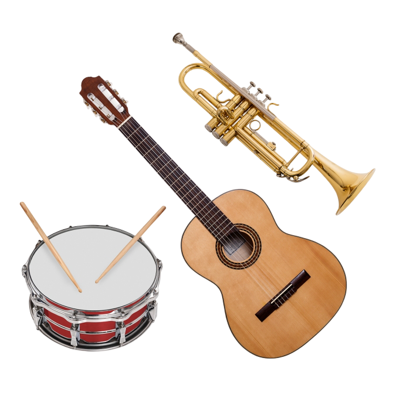
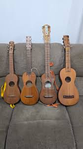

¿COMO SE HACE?

Recibimos por contacto internacional variaciones de instrumentos, desde los mas basicos como las guitarras y pianos,
hasta los mas complejos como baterias completas y contrabajos. nos ideamos en instrumentos de distintos materiales, para
que el cliente tenga mas variacion a la hora de escoger su nuevo instrumento,
pues muchos musicos afirman que hasta en
la madera de un instrumento esta el alma y escencia del sonido producido
El negocio se caracteriza por contar con un catálogo diverso de instrumentos musicales que incluye
guitarras acústicas y eléctricas, pianos y teclados, baterías, bajos, violines, instrumentos de viento como
flautas, saxofones y trompetas, así como instrumentos de percusión. Además de los instrumentos,
Arabella Music ofrece accesorios esenciales para los músicos, como cuerdas, baquetas, afinadores, fundas
protectoras, micrófonos, cables y equipo de amplificación.
 Uno de los principales valores de Arabella Music es su compromiso con la calidad y el servicio al cliente. El personal del negocio está conformado por personas con conocimientos en música y en el funcionamiento de los instrumentos, lo que les permite orientar a los clientes al momento de elegir el instrumento más adecuado según su nivel, estilo musical y presupuesto. De esta manera, el negocio no solo vende productos, sino que también ofrece asesoría personalizada para apoyar el aprendizaje musical.
Uno de los principales valores de Arabella Music es su compromiso con la calidad y el servicio al cliente. El personal del negocio está conformado por personas con conocimientos en música y en el funcionamiento de los instrumentos, lo que les permite orientar a los clientes al momento de elegir el instrumento más adecuado según su nivel, estilo musical y presupuesto. De esta manera, el negocio no solo vende productos, sino que también ofrece asesoría personalizada para apoyar el aprendizaje musical.

Arabella Music es un negocio que combina comercio, educación y cultura. A través de la venta de instrumentos
musicales, la asesoría a los clientes y la promoción de actividades relacionadas con la música, esta empresa
contribuye al desarrollo artístico de la comunidad. Su misión es facilitar el acceso a la música y apoyar a quienes
desean aprender, practicar o perfeccionar su talento musical, convirtiéndose así en un punto de encuentro para
músicos y amantes del arte sonoro.